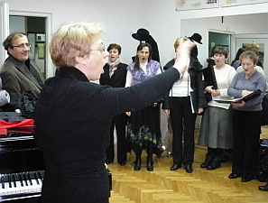
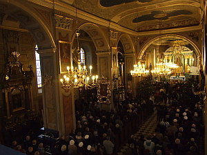

A tymczasem w Cameracie...
.
2012-01-22
Jeżeli msza w intencji Cameraty, to oczywiste, że Camerata na tej mszy śpiewa. I to jak? Najpiękniej jak potrafi.Spotykamy się 9:15 w Szkole Muzycznej na krótkiej próbie przed mszą. Camerata zdyscyplinowana przychodzi punktualnie. Pani dyrygent nie ma ... stoi pewnie w korku, bo jej się nie zdarza, żeby nie być na czas. Szkoda czasu, Maria siada do fortepianu i zaczynamy rozśpiewkę, ale oto jest i pani dyrygent, więc śpiewamy.

Idziemy spokojnie na mszę. Chwila oczekiwania i wchodzimy na chór, bo z chóru będziemy dzisiaj śpiewać.
Jeszcze spojrzenie na dół i zaczynamy. (Ale ten kościół jest piękny!)

Zajmujemy miejsca.

© Stowarzyszenie Muzyczne Chór Camerata Wieliczka